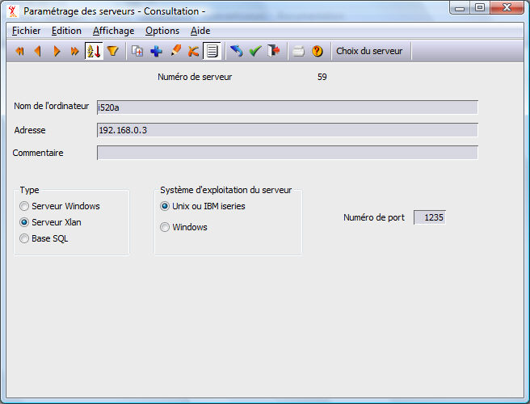

L'accès à la base de données n'est réalisé qu'en mode client-serveur. Il convient donc de créer un serveur dans la table des serveurs des postes client, par le choix "Serveurs" du menu "Paramétrage" d'Harmony.dhop.
On garnira les champs suivants :
Nom de l'ordinateur : Nom du serveur.
Adresse : Indiquer l'adresse IP du serveur SQL. Cette adresse est facultative si le poste client sait résoudre l'adresse à partir du nom du serveur.
Type : Serveur Xlan
Système d'exploitation : IBM iSeries
Numéro de port : 1235 par défaut ou la valeur de "NuméroService" du fichier config du serveur.
